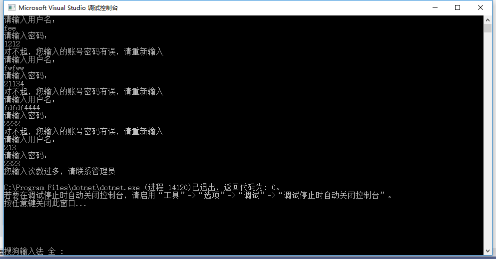

C# goto 语句用于直接在一个程序中转到程序中的标签指定的位置，标签实际上由标识符加上冒号构成
语法形式如下。
goto Labell;
语句块 1;
Labell
语句块 2;
如果要跳转到某一个标签指定的位置，直接使用 goto 加标签名即可。
在上面的语句中使用了 goto 语句后，语句的执行顺序发生了变化，即先执行语句块 2，再执行语句块 1。
此外，需要注意的是 goto 语句不能跳转到循环语句中，也不能跳出类的范围。
由于 goto 语句不便于程序的理解，因此 goto 语句并不常用。
EX.用于账号密码登录：如果错误次数超过3次，则输出“您输入次数过多，请联系管理员”。
using System;
namespace KingTest03
{
class Program
{
static void Main(string[] args)
{
Program program = new Program();
program.password();
}
public void password()
{
int count = 0;
denglu:
Console.WriteLine("请输入用户名：");
string username = Console.ReadLine();
Console.WriteLine("请输入密码：");
int password = int.Parse(Console.ReadLine());
if (username == "King" && password == 123456)
{
Console.WriteLine("恭喜您登陆成功");
}
else
{
count++;
if (count <= 3)
{
Console.WriteLine("对不起，您输入的账号密码有误，请重新输入");
goto denglu;
}
else
{
Console.WriteLine("您输入次数过多，请联系管理员");
}
}
}
}
}